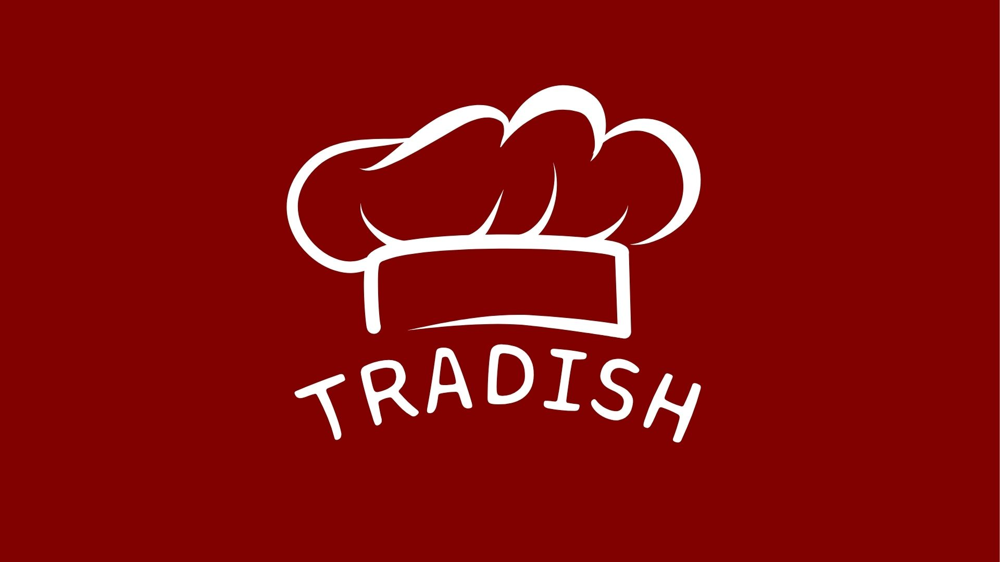
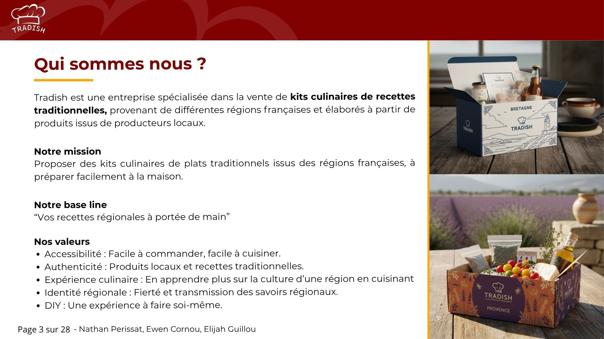
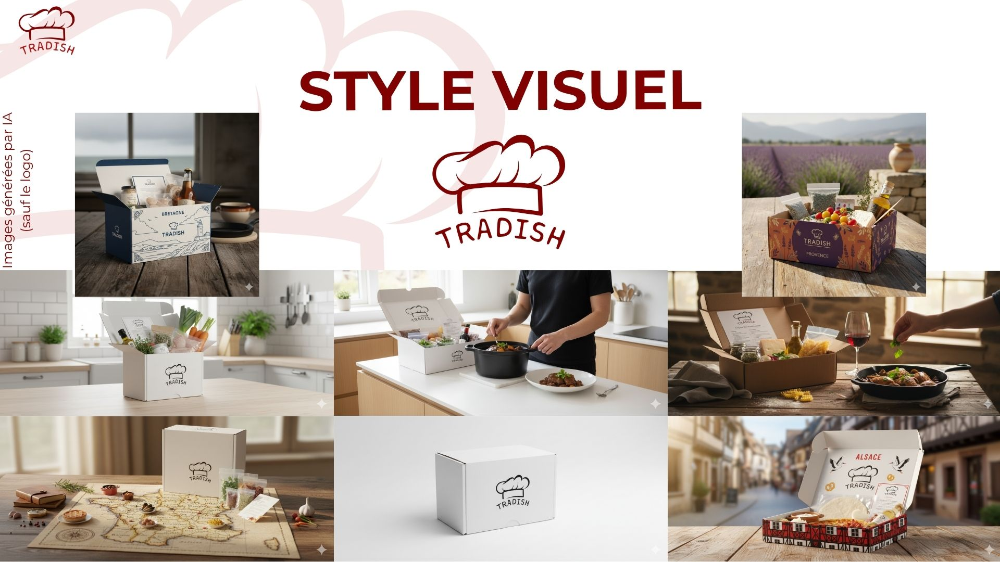
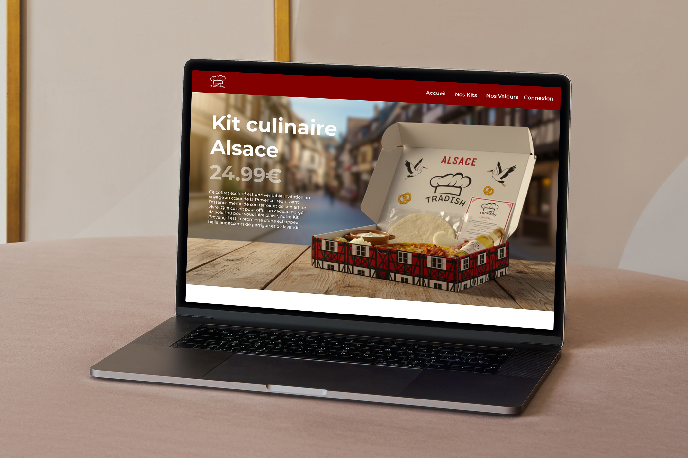

Tradish
E-commerce fictif · BUT MMI · IUT de Lannion
- 2025
- E-commerce
- Stratégie digitale
- Webmarketing
- Maquette
- Identité de marque
- Figma
- Canva
Contexte & objectifs
Réalisé dans le cadre du module Webmarketing & E-commerce, ce projet a pour ambition d'utiliser nos compétences afin de concevoir une marque e-commerce fictive de bout en bout, en intégrant les dimensions marketing, UX, stratégie d'acquisition, création technique et optimisation SEO.

Objectif de résultat
La marque se différencie en offrant bien plus qu'un simple repas : une immersion directe dans la culture et l'histoire de chaque région. Elle s'appuie sur une stratégie d'acquisition pertinente, un ton humoristique assumé sur les réseaux sociaux et une expérience utilisateur soigneusement pensée pour se démarquer des grands acteurs du marché des box repas.

Travail réalisé
Tradish, c'est avant tout un projet réunissant une identité de marque complète, des analyses concurrentielles et un plan de communication multicanal. Ce travail s'est concrétisé par la réalisation de maquettes haute fidélité sur Figma (desktop et mobile), illustrant un parcours client intuitif allant de la page d'accueil jusqu'au catalogue de kits régionaux.

Compétences mobilisées
- Stratégie d'acquisition
- Webmarketing
- UX Design
- Identité de marque
- SEO
- Maquettage Figma